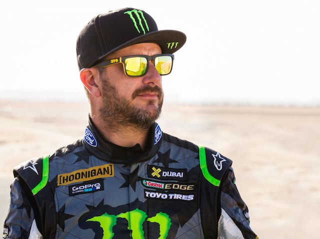
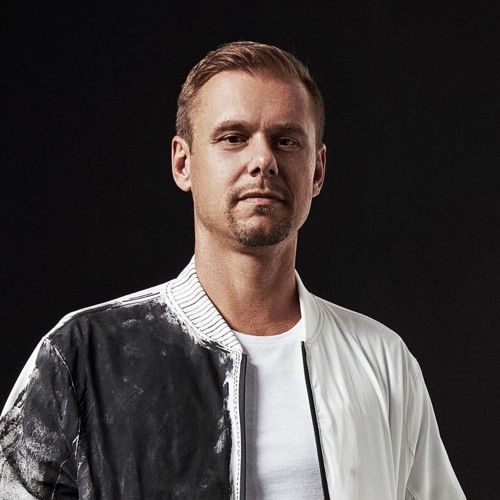
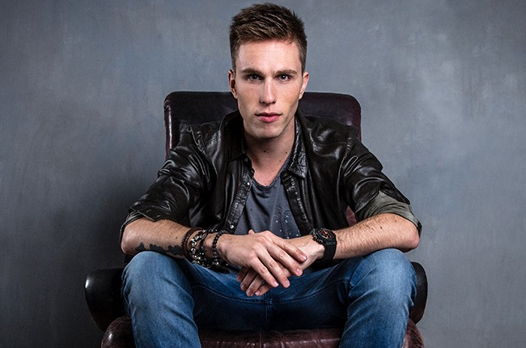

Ken Block
Rally Driver
a professional rally driver with the Hoonigan Racing Division, formerly known as the Monster World Rally Team. Block is also one of the co-founders of DC Shoes.

Armin Van Buuren
DJ/Producer
Dutch DJ, record producer and remixer from Leiden. Since 2001, he has hosted A State of Trance, a weekly radio show, which is broadcast to nearly 40 million listeners in 84 countries on over 100 FM radio stations.

Nicky Romero
DJ/Producer
professionally known as Nicky Romero, is a Dutch musician, DJ, record producer and remixer from Amerongen, Province of Utrecht. He has worked with, and received support from DJs, such as Tiësto, Fedde le Grand, Sander van Doorn, David Guetta, Calvin Harris, Armand Van Helden, Avicii and Hardwell.